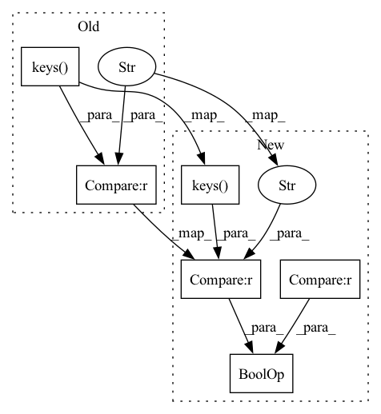

Pattern ID :5787
Before Change
self.num_classes = model.cfg.num_classes
self.ignored_label_inds = model.cfg.ignored_label_inds
if "class_weights" in dataset.cfg.keys() :
weights = DP.get_class_weights(dataset.cfg.class_weights)
self.class_weights = tf.convert_to_tensor(weights, dtype=tf.float32)
After Change
self.ignored_label_inds = model.cfg.ignored_label_inds
self.class_weights = None
if "class_weights" in dataset.cfg.keys() and len(
dataset.cfg.class_weights) != 0 :
weights = DP.get_class_weights(dataset.cfg.class_weights)
self.class_weights = tf.convert_to_tensor(weights, dtype=tf.float32)
In pattern: SUPERPATTERN
Frequency: 4
Non-data size: 6
Instances Fragment ID: 20351296
Project Name: isl-org/open3d-ml
Commit Name: 67123f7e9d5dbbe6a73c42ef648093a7d25ace4a
Time: 2021-05-11
Author: sanskaragrawal107@gmail.com
File Name: ml3d/tf/modules/losses/semseg_loss.py
M Class Name: SemSegLoss
N Class Name: SemSegLoss
M Method Name: __init__(4)
N Method Name: __init__(4)
M Parent Class: object
N Parent Class: object
M File Name: ml3d/tf/modules/losses/semseg_loss.py
N File Name: ml3d/tf/modules/losses/semseg_loss.py
M Start Line: 15
M End Line: 15
N Start Line: 14
N End Line: 17
Before Change
state_dict["visual_encoder.pos_embed"] = interpolate_pos_embed(
state_dict["visual_encoder.pos_embed"], model.visual_encoder
)
if "visual_encoder_m.pos_embed" in model.state_dict().keys() :
state_dict["visual_encoder_m.pos_embed"] = interpolate_pos_embed(
state_dict["visual_encoder_m.pos_embed"], model.visual_encoder_m
)After Change
state_dict["visual_encoder.pos_embed"] = interpolate_pos_embed(
state_dict["visual_encoder.pos_embed"], model.visual_encoder
)
if (
"visual_encoder_m.pos_embed" in model.state_dict().keys()
and "visual_encoder_m.pos_embed" in state_dict
) :
state_dict["visual_encoder_m.pos_embed"] = interpolate_pos_embed(
state_dict["visual_encoder_m.pos_embed"], model.visual_encoder_m
) Fragment ID: 20351297
Project Name: salesforce/lavis
Commit Name: cc226ecd116107732ccb4bd0e1a2c173071767f7
Time: 2022-05-25
Author: dongxu_li@outlook.com
File Name: lavis/models/albef_models/__init__.py
M Class Name: AnonimousClass
N Class Name: AnonimousClass
M Method Name: load_from_pretrained(2)
N Method Name: load_from_pretrained(2)
M Parent Class:
N Parent Class:
M File Name: lavis/models/albef_models/__init__.py
N File Name: lavis/models/albef_models/__init__.py
M Start Line: 47
M End Line: 52
N Start Line: 47
N End Line: 78
Before Change
def __init__(self, pipeline, model, dataset, device):
super(SemSegLoss, self).__init__()
// weighted_CrossEntropyLoss
if "class_weights" in dataset.cfg.keys() :
class_wt = DataProcessing.get_class_weights(
dataset.cfg.class_weights)
weights = torch.tensor(class_wt, dtype=torch.float, device=device)After Change
def __init__(self, pipeline, model, dataset, device):
super(SemSegLoss, self).__init__()
// weighted_CrossEntropyLoss
if "class_weights" in dataset.cfg.keys() and len(
dataset.cfg.class_weights) != 0 :
class_wt = DataProcessing.get_class_weights(
dataset.cfg.class_weights)
weights = torch.tensor(class_wt, dtype=torch.float, device=device) Fragment ID: 20351294
Project Name: isl-org/open3d-ml
Commit Name: 67123f7e9d5dbbe6a73c42ef648093a7d25ace4a
Time: 2021-05-11
Author: sanskaragrawal107@gmail.com
File Name: ml3d/torch/modules/losses/semseg_loss.py
M Class Name: SemSegLoss
N Class Name: SemSegLoss
M Method Name: __init__(5)
N Method Name: __init__(5)
M Parent Class: object
N Parent Class: object
M File Name: ml3d/torch/modules/losses/semseg_loss.py
N File Name: ml3d/torch/modules/losses/semseg_loss.py
M Start Line: 46
M End Line: 46
N Start Line: 46
N End Line: 47
Before Change
self.width_factor = width_factor
if "norm_par" not in kwargs.keys() and isinstance(dataset, ImageSet):
kwargs["norm_par"] = dataset.norm_par
if "num_classes" not in kwargs.keys() :
kwargs["num_classes"] = 1000
super().__init__(name=name, model_class=model_class, layer=layer, width_factor=width_factor, dataset=dataset, **kwargs)
self.sgm: bool = sgmAfter Change
self.width_factor = width_factor
if "norm_par" not in kwargs.keys() and isinstance(dataset, ImageSet):
kwargs["norm_par"] = dataset.norm_par
if "num_classes" not in kwargs.keys() and dataset is None :
kwargs["num_classes"] = 1000
super().__init__(name=name, model_class=model_class, layer=layer, width_factor=width_factor, dataset=dataset, **kwargs)
self.sgm: bool = sgm Fragment ID: 20351295
Project Name: ain-soph/trojanzoo
Commit Name: 207037b45f0a67e7ce1c0d7a14f01ecc9f813692
Time: 2020-12-29
Author: ain-soph@live.com
File Name: trojanvision/models/imagemodel.py
M Class Name: ImageModel
N Class Name: ImageModel
M Method Name: __init__(8)
N Method Name: __init__(8)
M Parent Class: Model
N Parent Class: Model
M File Name: trojanvision/models/imagemodel.py
N File Name: trojanvision/models/imagemodel.py
M Start Line: 163
M End Line: 163
N Start Line: 163
N End Line: 163